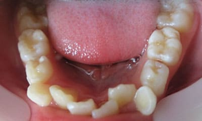
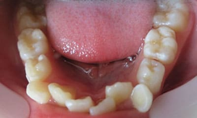
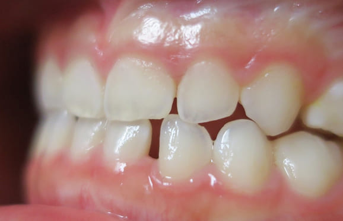
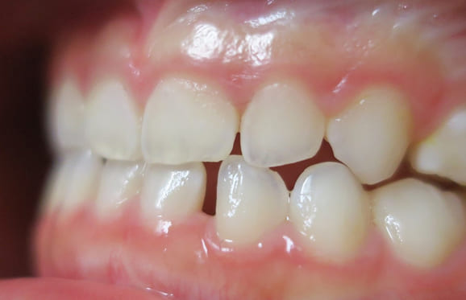

最小限の治療で歯の寿命を最大限に
むし歯の治療は歯科診療の原点です。どのような信念をもってむし歯治療を行うかが、その歯科医師のすべてではないかと考えています。当院でのむし歯治療の信念は 「最小限の治療(MI: Minimal Intervention)」です。一度削ってしまった歯、一度神経を取ってしまった歯、一度抜いてしまった歯は現在の人類の医療技術では二度と元に戻すことはできません (歯質、歯髄、歯胚再生の研究動向については常に最新の情報を取り入れておりますので、お気軽に質問してください)。 出来るだけ歯を削らず、出来るだけ神経を取らず、生まれもった歯を出来るだけ残して、歯の寿命を長くすることを信念としています。むし歯の進行程度についての診断は以下の基準に従います。
01
削らない治療(Co ~ C3)
当院では、できる限り歯を削らない治療を行っております。
通常の削らない治療は、基本的には麻酔をせずに一切削らないで行いますが、ケースによっては薬剤を患部に留めておくための形状を作るため、
麻酔をして最小限の歯を削る場合もあります。また、一部健康保険がきかない治療もあります。
「歯を削らない治療」、「神経を取らない治療」は、「痛みを取る治療」と相反する場合が多いです。
歯の痛みを取るためには、虫歯をしっかりと削り取り(場合によっては神経も取り)、病巣を無菌状態にして炎症を止める必要があります。歯を削らない・神経を取らない治療の根本的な考えは、
お薬や専門機器を用いて虫歯菌を殺菌し、患者様自身の免疫と再石灰化能を期待して虫歯を治すことにあります。
つまり、短時間、一回の治療で痛みを取る治療では無いため、場合によっては数週間から数か月間、痛みが続くこともあり、さらに、治療経過によってはやむなく歯を削る治療に移行することがある旨はご理解ください。
02
神経を取らない治療(C2 ~ C3)
当院では「MTAセメント」 「ドックベストセメント」 の治療法を用いて、できる限り神経を取らない治療を行っております。 一部、健康保険がきかない治療もあります。
03
歯を抜かない治療(C4)
不幸にも、むし歯が進行して骨に埋まっている部分の歯(歯根)まで細菌感染が起こってしまった場合(C4)、通常では抜歯が適応治療になります。 しかし、歯根までむし歯が進行してしまっている場合の多くは痛みが無いのも特徴です。 特に痛みも無いのになんで歯を抜かなければならないかとお思いの患者様も多くいらっしゃいます。 生物学的・医学的には抜歯が適応であったとしても、患者様のご希望と、精密検査の結果から、当院では歯を抜かずに温存する治療も行っております。 もう歯がほとんど残っていないから歯を抜かなければならないと諦めていらっしゃる患者様も、ぜひ一度当院にてご相談、検査をさせて下さい。
根管内の破損器具除去
+
根管内の破損器具除去
+
● 症例1
01 左下7の近心根にエンジンファイルの破折
02 ファイル除去時
※根尖周囲の透過像はまだ残存
03 最終の根充剤を充填
※根尖透過像が小さく治癒方向へ向かっている
虫歯や破折で抜歯後の部分矯正
+
虫歯や破折で抜歯後の部分矯正
+
● C4を超え歯根までの虫歯を抜歯、スペースを利用して歯並び全体を整えた症例
● 歯根が折れ保存不可の歯を抜歯して、そのスペースに八重歯を並べた症例
● C4を超え歯根までの虫歯を抜歯、親知らずを利用して歯並び全体を整えた症例
 



 
